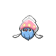

📖 英語版の図鑑説明
By exposing foes to the blinking of its luminescent spots, Inkay demoralizes them, and then it seizes the chance to flee.
日本語訳
発光する斑点を点滅させて敵を動揺させ、その隙に逃げる。
📝 この図鑑文に出てくる英単語
| 英単語 | 意味 | 品詞 | レベル |
|---|---|---|---|
| exposing | さらしている | 動詞 | 高校 |
| foes | 敵(複数形) | 名詞 | 大学 |
| blinking | 点滅している | 動詞 | 高校 |
| luminescent | 光を放つ | 形容詞 | 大学 |
| spots | はん点(複数形) | 名詞 | 高校 |
| demoralizes | やる気をなくさせる | 動詞 | 大学 |
| seizes | つかむ | 動詞 | 大学 |
| flee | 逃げる | 動詞 | 大学 |
文法ポイント by exposing は「by + 動詞のing形」で「〜することによって」と手段を表します。
💡 英語名「Inkay」の由来
英語名「Inkay」は、ink（墨）、inky（墨のような）、Cephalopod（頭足類）とokay（オーケー）を組み合わせた名前と考えられている。ドイツ語の名前は「Iscalar」で、Kalmare（イカ）、「じゃあね」、is klar（「なるほど！」）から作られている。
出典 Bulbapedia
📊 マーイーカの種族値
HP53
こうげき54
ぼうぎょ53
とくこう37
とくぼう46
すばやさ45
合計 288
❓ よくある質問
- マーイーカの英語名は？
- マーイーカの英語名は「Inkay」です。
- マーイーカの英語名「Inkay」の由来は？
- 英語名「Inkay」は、ink（墨）、inky（墨のような）、Cephalopod（頭足類）とokay（オーケー）を組み合わせた名前と考えられている。ドイツ語の名前は「Iscalar」で、Kalmare（イカ）、「じゃあね」、is klar（「なるほど！」）から作られている。
- マーイーカは英語版の図鑑でどう説明されている？
- 「By exposing foes to the blinking of its luminescent spots, Inkay demoralizes them, and then it seizes the chance to flee.」と書かれています。日本語にすると「発光する斑点を点滅させて敵を動揺させ、その隙に逃げる。」という意味です。
マーイーカは第6世代（カロス地方）のポケモンです。第6世代（カロス地方）の英語名一覧 →